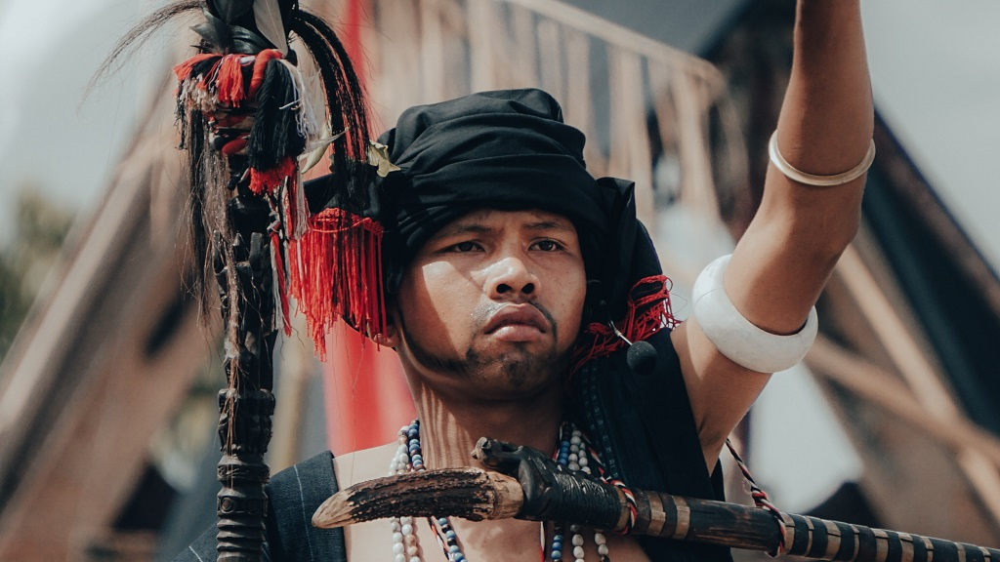

Pengertian Unsur Kebudayaan
Unsur kebudayaan adalah elemen yang membentuk sistem kehidupan masyarakat. Keberagaman unsur kebudayaan ini mencakup berbagai aspek seperti nilai, norma, bahasa, simbol, teknologi, seni, agama, dan institusi sosial. Nilai dan norma mencerminkan pandangan hidup masyarakat, menentukan etika dan moral yang mengarah pada perilaku anggota masyarakat. Bahasa, sebagai sarana komunikasi, tidak hanya sebagai alat praktis tetapi juga sebagai pembawa nilai dan identitas budaya. Simbol-simbol, baik dalam bentuk kata-kata, lambang, atau ritual, menjadi representasi penting dalam menyampaikan makna dan memperkuat identitas budaya.
Seni, termasuk musik, tari, seni rupa, dan sastra, tidak hanya menjadi ekspresi kreativitas tetapi juga membawa warisan budaya dari generasi ke generasi. Agama, sebagai unsur spiritual, memainkan peran dalam membentuk nilai-nilai, norma, dan tatanan sosial dalam masyarakat. Lingkungan sosial, seperti keluarga, sekolah, dan pemerintahan, membentuk struktur organisasi yang mengatur kehidupan masyarakat secara lebih teratur. Semuanya ini saling terikat dan membentuk jaringan yang kompleks, menciptakan keberagaman dan identitas budaya kelompok masyarakat.
Penting untuk memahami unsur kebudayaan karena ini tidak hanya memengaruhi cara masyarakat berinteraksi dengan dunia sekitarnya, tetapi juga membentuk identitas kolektif dan memberikan kontinuitas dari satu generasi ke generasi berikutnya. Dalam era globalisasi, pertukaran unsur kebudayaan antarsuku dan antarbangsa semakin meningkat. Melahirkan kebutuhan yang memahami dan menghargai keberagaman budaya. Kesadaran terhadap unsur kebudayaan ini menjadi kunci untuk membangun pemahaman yang mendalam antarindividu dan kelompok masyarakat, membuka jalan bagi toleransi, dialog, dan penghormatan terhadap perbedaan. Dengan memahami dan melestarikan unsur kebudayaan, kita dapat memastikan bahwa warisan budaya kita tetap hidup, berkembang, dan memberikan kontribusi positif bagi peradaban manusia.